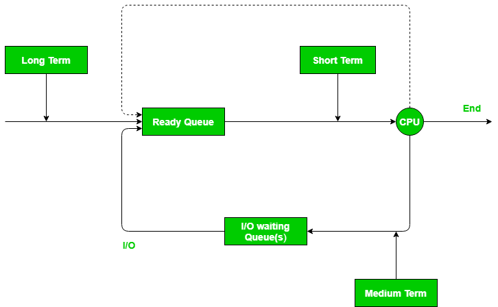
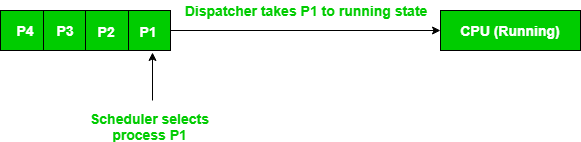

Schedulers are special system software which handle process scheduling in various ways. Their main task is to select the jobs to be submitted into the system and to decide which process to run. There are three types of Scheduler:
- Long term (job) scheduler – Due to smaller size of main memory initially all program are stored in secondary memory. When they are stored or loaded in main memory they are called process. This is decision of long term scheduler that how many process will stay in ready queue. Hence, in simple words long term scheduler decides degree of multi-programming of system.
- Medium term scheduler – Most often, a running process needs I/O operation which doesn’t requires CPU. Hence during execution of a process when a I/O operation is required then operating system sends that process from running queue to blocked queue. When a process completes its I/O operation then it should again shifted to ready queue. ALL these decisions are taken by medium term scheduler. Medium-term scheduling is a part of swapping.
- Short term (CPU) scheduler – When there are lots of processes in main memory initially all are present in ready queue. Among all of the process a single process is to be selected for execution. This decision is handled by short term scheduler.
Lets have a look on the figure given below. It may make more clear view for you.

Dispatcher –
Dispatcher is a special program which comes into play after scheduler. When scheduler completed its job of selecting a process, then after it is the dispatcher which takes that process to the desired state/queue. The dispatcher is the module that gives control of the CPU to the process selected by the short-term scheduler. This function involves the following:- Switching context
- Switching to user mode
- Jumping to proper location in user program to restart that program
Difference between the Scheduler and Dispatcher –
Consider a situation, where various process residing in ready queue and waiting for execution. But CPU can’t execute all the process of ready queue simultaneously, operating system have to choose a particular process on the basis of scheduling algorithm used. So, this procedure of selecting a process among various process is done by scheduler. Now here the task of scheduler completed. Now dispatcher comes into picture as scheduler have decide a process for execution, it is dispatcher who takes that process from ready queue to the running status, or you can say that providing CPU to that process is the task of dispatcher.Example –
There are 4 process in ready queue, i.e., P1, P2, P3, P4; They all are arrived at t0, t1, t2, t3 respectively. First in First out scheduling algorithm is used. So, scheduler decided that first of all P1 has came, so this is to be executed first. Now dispatcher takes P1 to the running state.
Properties DISPATCHER SCHEDULER Definition: Dispatcher is a module that gives control of CPU to the process selected by short term scheduler Scheduler is something which selects a process among various processes Types: There are no diifrent types in dispatcher.It is just a code segment. There are 3 types of scheduler i.e. Long-term, Short-term, Medium-term Dependency: Working of dispatcher is dependednt on scheduler.Means dispatcher have to wait untill scheduler selects a process. Scheduler works idependently.It works immediately when needed Algorithm: Dispatcher has no specific algorithm for its implementation Scheduler works on various algorithm such as FCFS, SJF, RR etc. Time Taken: The time taken by dispatcher is called dispatch latency. TIme taken by scheduler is usually negligible.Hence we neglect it. Functions: Dispatcher is also responsible for:Context Switching, Switch to user mode, Jumping to proper location when process again restarted The only work of scheduler is selection of processes.